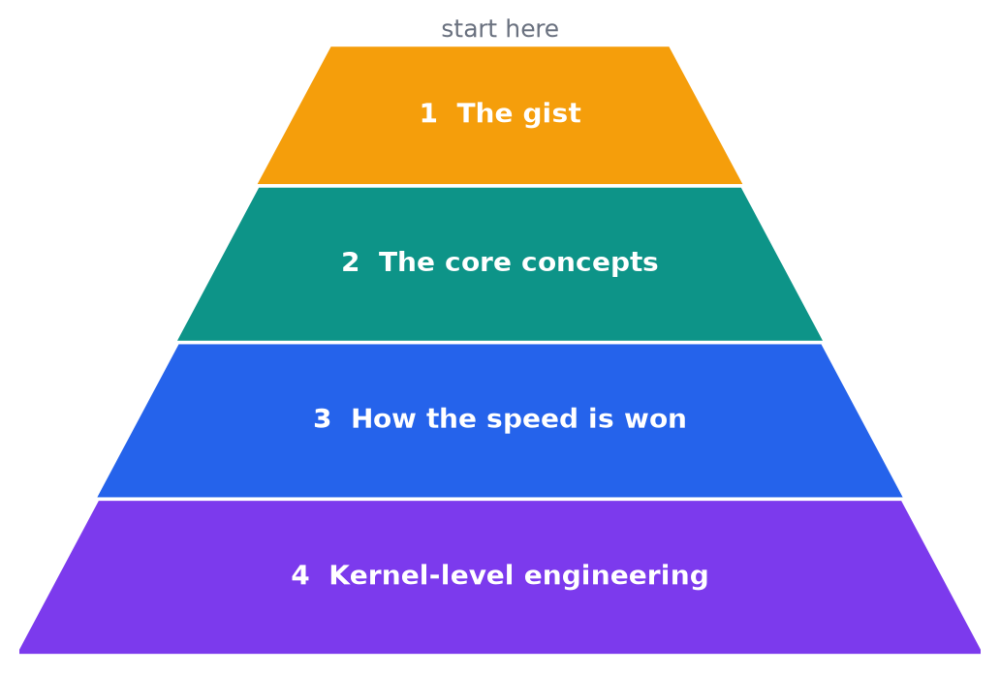
Most explanations of "running AI locally" either stay at a hand-wavy level or drown you in CUDA. This one is built as a pyramid. Each level repeats the idea of the level above, but with more detail, more numbers and more ways it can go wrong. You can stop at any level and still have a correct picture, just a blurrier one.
If you only read one page, read this one.
Imagine a brilliant assistant who has memorised a library. You hand them a stack of papers (your question and any documents), they read it all, and then they write the answer one word at a time. That is a large language model. The memorised library is called the weights. A modern useful model has tens of billions of them.
Normally that assistant lives in a data centre. This project asks a different question: how good an assistant can we keep at home, on one second-hand gaming graphics card, privately, for coding? The card is an NVIDIA RTX 2080 Ti that was modified to carry 22 GB of memory and is capped at 175 watts. It is a 2018 design. Everything interesting in the repository comes from the gap between what the model wants and what that card has.
Two numbers explain almost everything: how many bytes the card can move per second, and how many bytes the model needs to read for every single word it writes.
Benchmarks that ask: how long is the wait, how many words per second, does it still find a needle in 240,000 tokens of text, can it actually fix a bug in a sandbox? Hundreds of cards and reports live under docs/ and bench/.
A private gateway on a home server so tools like OpenCode can use the models over a secure network. It protects the GPU, switches models safely and is controlled from Home Assistant. See serving/.
Careful experiments and some custom GPU code (CUDA kernels) to make the same model answer faster without changing what it says. See research/.
A ledger of every experiment, including failures, with a rule: change one thing, repeat the measurement, never quote the best run.
| Model (role) | What it can do on the one 2080 Ti |
|---|---|
| Swift 1.5, 27B (production default) | Reads a 260,000-token input, answers at about 19 tokens per second, solves 3 of 4 held-out coding tasks. |
| Inkling 2 Mini, 26B (research engine) | Handles 242,134 real input tokens (about a thousand pages), 26.8 tokens per second at that size, 7 of 7 hidden tests passed. |
| Qwen3.8-27B Obliterated (selectable profile) | 37.8 tokens per second at 64K context, and a follow-up question that starts after 0.51 s instead of 158 s thanks to a prompt cache. |
These come from different harnesses and runtimes. Compare them only through the linked reports in the repository.
The card has 22 GB. A 27-billion-parameter model written at normal 16-bit precision is about 54 GB. It simply does not fit. The first big idea of the whole field is to squeeze the numbers.
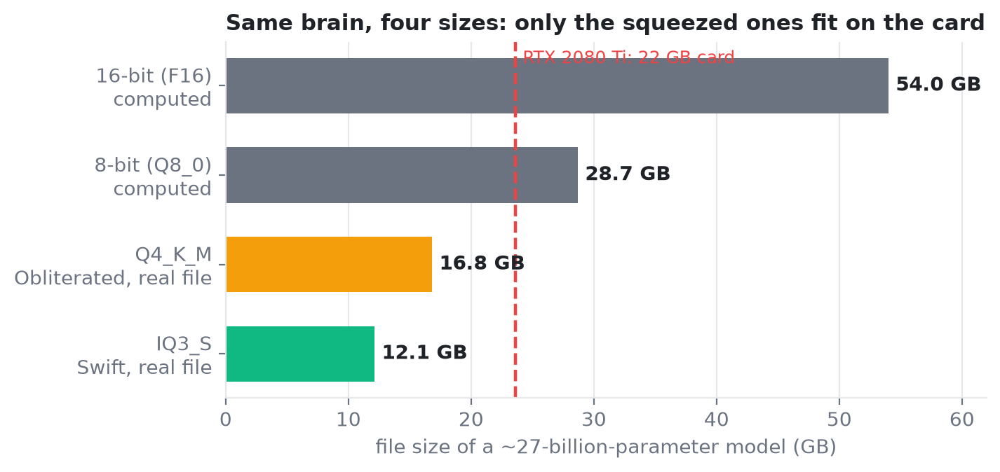
Squeezing the weights is only the start. The model also needs working memory for the conversation (the KV cache, Level 2), room for temporary buffers, and speed. The remaining 90 percent of this guide is about those three problems.
| Token | A chunk of text the model reads or writes. |
| Context window | How many tokens the model can keep in view at once (here up to 262,144). |
| Weights / parameters | The memorised knowledge: billions of numbers. |
| Quantization | Storing those numbers with fewer bits so they fit. |
| VRAM | The graphics card's own memory (22 GB here). |
| Prefill / decode | Reading your prompt (fast, parallel) versus writing the answer (slow, one token at a time). |
| KV cache | The model's short-term memory of the conversation so far. |
| TTFT | Time to first token: how long you wait before the answer starts. |
| Kernel | One small program that runs on the GPU. A single token needs thousands. |
Enough to read any card in the repository and know what it is telling you.
Models do not read letters or words. A tokenizer splits text into pieces from a fixed vocabulary (the Qwen models here have 248,320 entries). A common word is often one token, a rare word or a line of code might be several.
def quicksort(arr): might become about 6 tokens: def, quick, sort, (, arr, ):. The exact split depends on the tokenizer, which is why every benchmark in this repo counts tokens with the model's own tokenizer or the server's metrics, never by guessing from characters.The context window is the total number of tokens, prompt plus answer, the model can hold. "262,144" means 256 Ki tokens. A rough rule is three quarters of a word per token, so that is on the order of a few hundred thousand words, an entire codebase or several novels. Important honesty note from the repo: the number 262,144 is capacity. The largest actually qualified input for Inkling is 242,134 tokens. A window being declared in a model's metadata says nothing about whether it still finds things at the far end.
A model's weights are just a very long list of numbers. A "27B" model has about 27 billion of them. Each number can be stored in 16 bits (precise, large) or squeezed into 8, 4 or about 3 bits (smaller, slightly less precise). The file size is simple arithmetic:
The names in the repo (Q4_K_M, IQ3_S, IQ3_XXS, NVFP4) are different recipes for squeezing. Many modern files are mixed: important tensors keep more bits. The audit in this repo discovered that one "IQ3" file contains some IQ1_M tensors, which is why the project's audit tool lists every tensor type instead of trusting a filename.
When a model is loaded, memory is spent on:
The planning tool in bench/audit.py adds these up before a run. Its rule: if something is unknown (for example workspace), it is reported as unknown_overheads, and that never counts as "verified to fit".
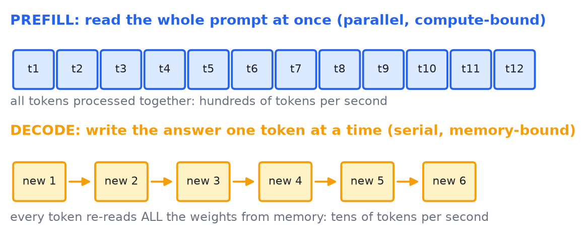
These two phases behave so differently that the repo reports them separately.
| Phase | What happens | Limited by | Typical numbers here |
|---|---|---|---|
| Prefill | The prompt is read in chunks. Hundreds of tokens at once. | Compute (arithmetic speed) | 400 to 1,200 tok/s |
| Decode | The answer is written one token at a time. | Memory bandwidth and latency | 20 to 60 tok/s |
To write the next token the model has to look back at everything before it. This looking-back is called attention. For every earlier token and every attention layer, the model stored two small vectors during prefill, a key and a value. Storing them means it does not recompute the past for each new token. That store is the KV cache.
The cost is memory that grows with the conversation. The repo's formula, for a model with 16 attention layers and 1024-wide K and V rows, is:
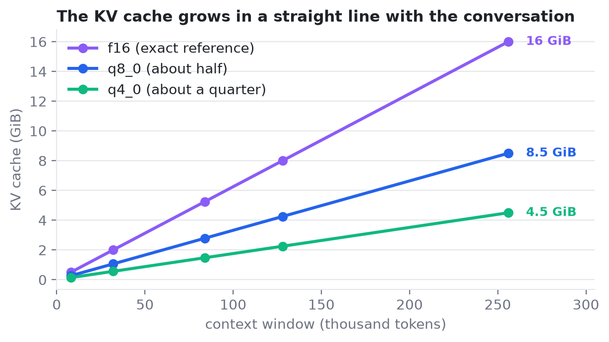
docs/memory-model.md). Halving the precision halves the cache, but quantized KV is explicitly lossy; f16 stays the reference.Every weight is used for every token. Simple, and the reference for everything else. Example: the dense Qwen3.8-27B IQ3_S used in the DFlash2 experiments.
The Qwen3.8-27B family (Swift, Obliterated) has 64 blocks, but only 16 are classic attention. The other 48 are "recurrent" layers that carry a fixed-size state instead of a growing KV cache. One of the repo's earliest decisions (ADR 0001) is to respect this: treating all 64 layers as ordinary attention would overestimate the memory and misdescribe the model. Consequence: a recurrent state cannot simply be rewound by deleting tokens, which makes caching trickier (Level 3).
Inkling stores 128 small "expert" networks per layer, and a router picks only 8 for each token. It also reuses its middle layers three times (a loop), so 24 stored layers are executed as 48 visits, 8 of them full attention.
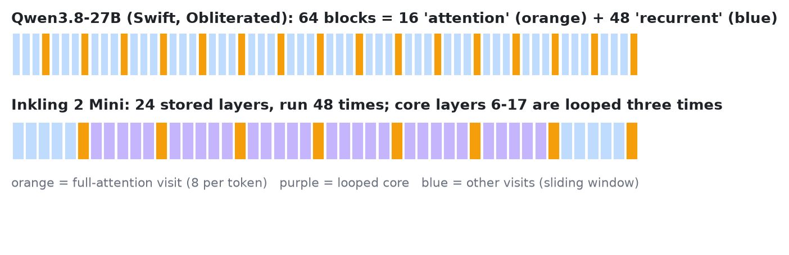
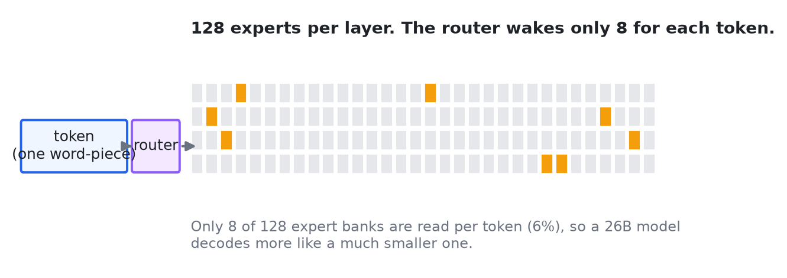
The physical limit, the clever tricks, and the discipline of measuring them.
Here is the single most useful piece of reasoning in the repository. To produce one token, the GPU must read essentially all the weights that token uses from memory. The GPU can read memory at a finite rate. So:
As the conversation gets longer, every token also has to read the KV cache. At 128K context the eight full-attention visits read about 2.3 GB more, so the bytes per token jump from 3.3 GB to 5.6 GB and the ceiling falls to about 97 tok/s.
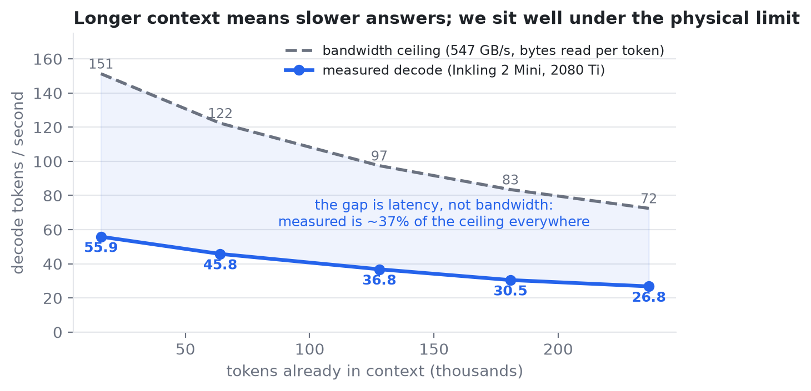
Look at the gap. We reach about 37 percent of the ceiling at every depth. That is far from the 90 percent a perfectly streaming kernel would hit, and it tells you something precise: decode here is limited by latency, not bandwidth. The GPU is waiting on thousands of small, dependent steps rather than saturating its memory pipe. That observation drives Level 4. It was also confirmed on the other big model: while decoding Obliterated, the memory controller was only 40 to 48 percent busy while the shader units looked 97 percent busy.
inference-optimisation skill: compute the physical ceiling before optimizing, measure the real hardware (bandwidth, tensor-core throughput) at the actual 175 W limit rather than borrowing a spec sheet or another GPU's number, and only then decide where the gap is worth chasing. It also means a borrowed result, for example a throughput quoted for an RTX 5090, is never used as a ceiling for this card.Decode is serial and wastes the GPU. The trick: a cheap drafter guesses the next several tokens, and the big model checks all the guesses in one pass (a pass that costs only slightly more than writing one token, because the weights are read once). Every guess that matches is accepted for free; the first wrong guess is replaced by the big model's own token. The output is the same as normal decoding.
Names in the repo: MTP (multi-token prediction, a drafter built into the model), DFlash2 (a separate, faster drafter used with the dense model), DSpark (Inkling's official drafter, currently parked, see Level 4).
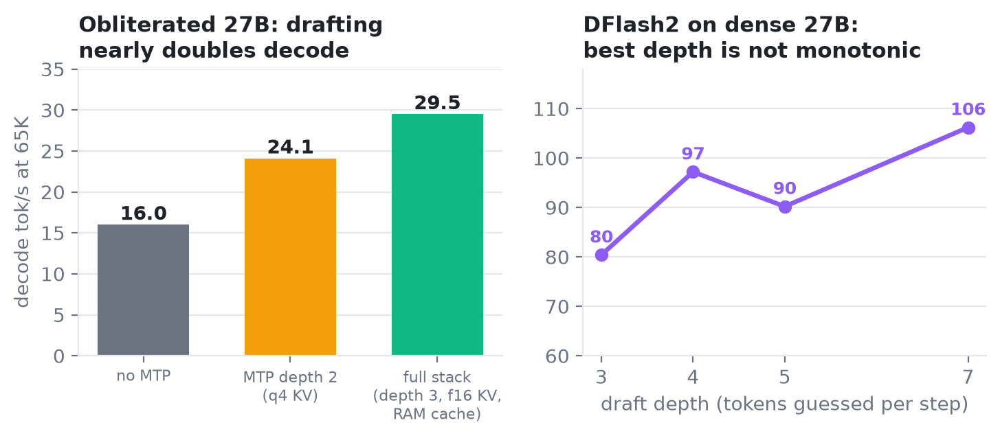
If your next request starts with the same text as the last one (as in every chat or coding session), the server can keep the KV cache and only process the new tokens. That turns a minutes-long prefill into a short one.
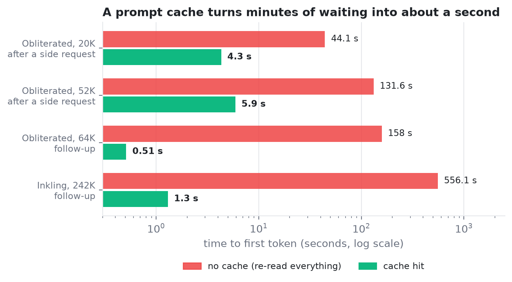
A real client does not send a clean linear conversation. OpenCode, for instance, fires a short side request to generate a chat title. On a single-slot server with no cache, that tiny request overwrites the big cache, and the next real turn must re-read the whole 20,645-token history: 44.1 seconds of waiting instead of 4.3. The fix was enabling a RAM-backed prompt cache (--cache-ram 8192, with --no-cache-idle-slots), and it is now also on for Swift. At 52K context the same turn took 5.9 s versus a 131.6 s cold prefill.
Prefill processes the prompt in chunks. The size of those chunks changes the speed, and the best size depends on the runtime and the memory left.
| Observation | Result |
|---|---|
| Strata runtime, 128K prompt, 4K chunks versus 1K chunks | 2.33x the cold prefill throughput |
| Inkling at 128K: micro-batch 512 versus 256 | 766.7 vs 583.7 tok/s prefill (512 is 31% faster) |
| Inkling at 262,144 context | micro-batch 512 does not load (7.40 GiB compute buffer); 256 is the only option, and was the one qualified at 242K |
| Obliterated: micro-batch 512 with batch 2048 | +10% cold prefill, +8% on cached tails, decode unchanged |
The lesson: a "slower" setting is sometimes the only one that fits, so profiles in this repo record which settings were qualified, not just which were fastest.
Because the card's behaviour drifts (clocks, temperature, other processes), a single benchmark number is almost meaningless. The repo's rules, adopted from the optimisation skill:
ledger.jsonl with its hypothesis, result and verdict. A "rejected ledger" says what not to retry without a new reason.A fast model nobody can safely use is a demo. This is the part that has to keep running.
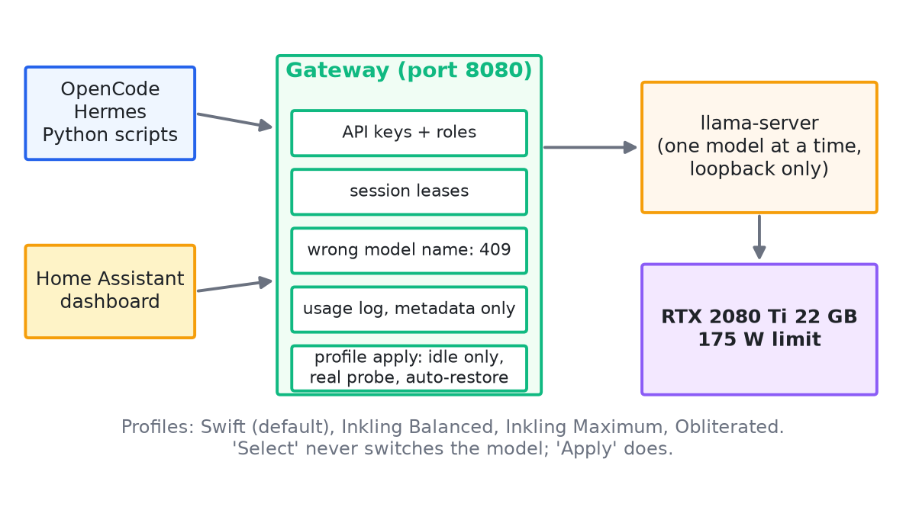
The key facts, all from docs/production-serving.md and docs/multi-model-control-center.md:
model_not_active. This prevents a client from silently getting a different model than it asked for.| No GPU firmware or VBIOS changes, no overclocking, no voltage changes, power limit stays at 175 W. |
| Production binaries, model files and checkpoint hashes are never modified; experiments run in isolated copies. |
| Never interrupt an active request or lease. If a GPU experiment cannot get exclusive access safely, it stops and reports a blocker instead of force-killing anything. |
| Never use broad process killing; a staging gateway on another port, with a copy of the database, is used for risky profile tests. |
After any GPU test: restore Swift, check /healthz, and run one real inference. |
This is also how the experiments in Level 4 are run: a small wrapper takes exclusive GPU access only when the gateway is idle, runs a script, and always restores the service, even if the script crashes.
Speed means nothing if the answers are wrong, so the repo scores several kinds of quality:
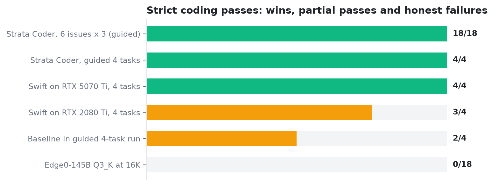
The Strata coder campaign passed coding but failed its stability gate at 31.10 minutes of a planned hour: after a mid-session process restart, the model could no longer recall a random marker that had been planted earlier, even though all 452 stored messages were intact. The offline audit showed the later compaction summaries had already dropped the marker before the restart, so the cause was summary retention, not the restart itself. The campaign stopped there and the 128K agent runs were skipped. The honest part: the repo says what is proven and what is only an inference.
While analysing an OpenCode session on the Obliterated profile, the model kept running Write-Output "web search" through a shell tool more than 20 times in a row. Every tool call was perfectly formed, so the chat template and tool parsing worked. The model wanted a web search tool that did not exist, invented a fake one, and repeated itself even after being told to stop. Contributing factors that were identified:
sampling), while Swift pins temperature 1.0, top-p 0.95 and top-k 20; weak sampling makes verbatim repetition more likely (a hypothesis, not yet tested).high returned 400; supported levels are none, low, medium, xhigh).It is a good example of what "agent quality" really is: not just correct tokens, but sensible behaviour when the right tool is missing.
Where individual percent gains live, and where most ideas die.
A GPU does work by launching kernels. A big matrix multiply is one kernel and keeps the card busy. But Inkling's decode step is different: for each token it launches roughly 2,400 to 2,800 small kernels (norms, convolutions, mixes, routing, top-k, small matrix-vector products), many of them depending on the previous one and finishing in under 8 microseconds. Each launch and each dependency wait costs time even when almost no data moves.
The remedy is fusion: merge neighbouring tiny kernels into one so there are fewer launches and fewer round trips to memory. Four fusions (QKV post-processing, the relative-bias transform, the routing tail, a cached quantized input) gave +8.7 percent and were bit-exact: the output is identical to before.
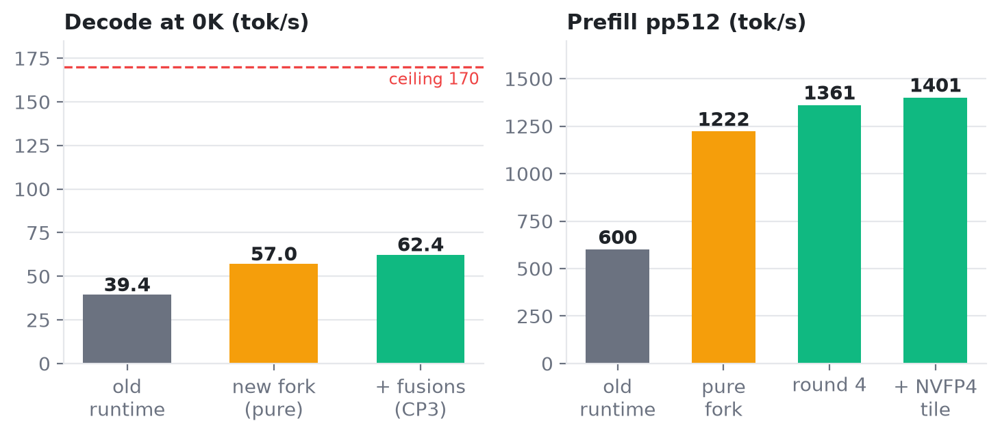
Standard attention kernels save time for "grouped-query attention" by letting several query heads share one pass over the same keys and values. Inkling's relative-position bias is different for every head (the mask has 24 heads' worth of rows), so the stock code refuses to pack the heads. Result: for each of the 3 query heads per KV head, the cache is re-read and re-dequantized from L2, 3.7 times the DRAM traffic.
A custom kernel was written that reads each KV head once, applies each head's own mask row, and keeps the same reduction order as the original. It is bit-exact and gave about +3.5% at 32K, and it is the reason long-context decode is as good as it is.
Prefill's time goes into multiplying the squeezed weights by the activations using integer tensor cores. The study found the expert multiplications reach only about 16 to 18 percent of the compute ceiling (about 7,600 tok/s at 50 percent of the INT8 peak). Findings that each yielded a measured step:
Together these moved pp512 from 1,210 to 1,401 tok/s, and all were verified bit-exact against the previous build.
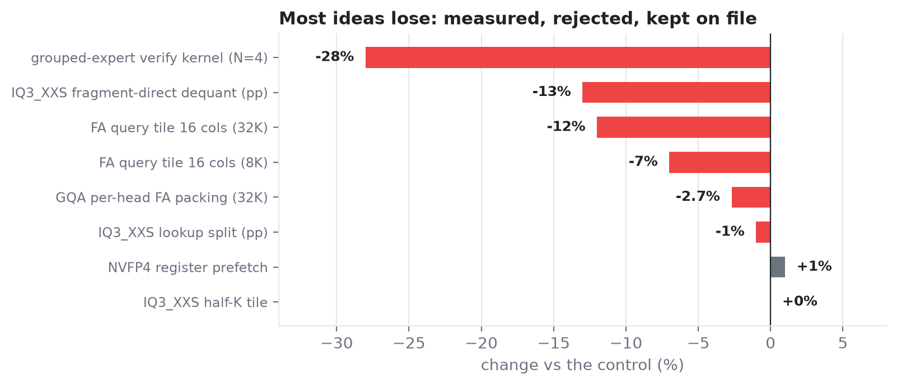
research/inkling-turing/rejected/.The rejected ledger is a feature, not an embarrassment. Examples of the reasoning that went into it:
The relative bias was first built as a long chain of float intermediates that the allocator reserved for every query-by-key element: 199 bytes per element. Turning the chain into one graph node cut it to 55 bytes; computing the distances on the GPU from positions instead of building a matrix on the CPU and copying it removed the host-to-device upload:
| Per 32K-token prefill | Before | After |
|---|---|---|
| Host upload | 2,333 MB | 13.2 MB |
| CPU fill time | 1,288.5 ms | 2.0 ms |
| Loaded VRAM at 256K, ubatch 256 | 20,080 MiB | 19,824 MiB |
This is why a 262,144-token window loads at all, and why 242,134 real tokens were qualified at micro-batch 256.
Inkling ships an official drafter (DSpark). Two facts stopped the work. First, it does not load in the fork, because it needs a recurrent "Markov head" port that is not implemented. Second, the economics are marginal: verifying 4 tokens in one pass costs 2.34x a single token, so each step must accept at least about 2.6 tokens on average to break even. Other engines report 1.5 to 2.6 on prose (a loss) and 2.3 to 2.9 on code (marginal), so it only clearly pays on edit-and-copy workloads. The conclusion is recorded, with the numbers, so nobody has to rediscover it.
On 24 November 2026 a fresh baseline and a profile were taken on the production-equivalent runtime (its hashes match the production manifest):
| Depth | Decode tok/s (median of 3) | Spread | Prefill tok/s |
|---|---|---|---|
| 16K | 55.88 | 0.19 | 1,159 |
| 64K | 45.80 | 0.07 | 803 |
| 128K | 36.81 | 0.08 | 569 |
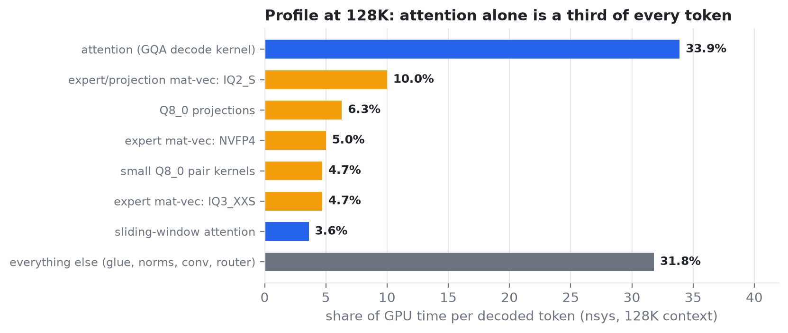
That kernel runs 8 times per token and takes 1.14 ms per launch. It reads about 285 MB of KV each time, which is roughly 250 GB/s, or 46 percent of the 547 GB/s ceiling. The kernel walks the context in 128-position tiles one after another with a shuffle reduction per row, uses 244 registers per thread, and keeps only a few warps resident, so it cannot keep enough memory requests in flight: it is latency-bound. Bringing it up to 90 percent of the ceiling would save about 4 ms per token at 128K, around 15 percent end to end. That is the biggest open lever.
A configuration switch that retunes the split of the KV range (GGML_CUDA_INK_T_FAGQA=2) was tested against the default:
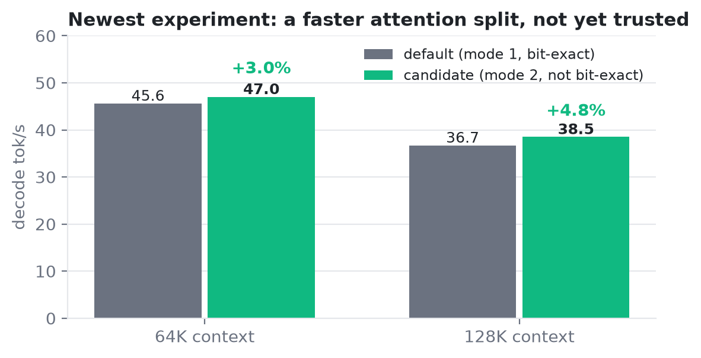
The squid5090 project (an engine for an RTX 5090) was studied as a reference: CUDA-graph capture of decode, expert-grouped verification, split-K attention, checkpointed prefix caches. The conclusion, backed by reading the sources and by measuring, is that very little transfers to a 2018 Turing card: its fastest kernels need Blackwell-only instructions and 4-bit floating-point hardware that sm_75 does not have, and the ideas that can be ported (expert grouping, attention tiling) were measured here and lost. The one durable takeaway is methodological: build from byte counts and ceilings, then check each idea against a control.
A home GPU runs a 26 to 27 billion parameter model because the weights were squeezed to about 3 to 5 bits, the memory was budgeted down to the megabyte, and the speed was pushed from roughly 40 to over 60 tokens per second at short context through fusion and tile engineering. A prompt cache turns nine-minute waits into one-second ones, a drafter nearly doubles decode on the models where it pays, and a careful gateway keeps all of it safe and recoverable. The remaining gap, about 37 percent of the physical limit, is a latency problem that points at the attention kernel for long contexts. And along the way every idea that failed is on file so it does not get tried twice.
Where things live and how to check any claim yourself.
| Path | What it is |
|---|---|
README.md | Results table and collapsible sections with all benchmark cards. |
src/qah/ | The first reference-backed executor: model audit, memory planning (memory.py), telemetry, run orchestration around llama.cpp. |
bench/ | Benchmark harnesses and report/card generators (audit.py, run.py, agent harnesses, render_cards.py, results and evidence). |
serving/ | The gateway, profile definitions, lifecycle and lease logic, Home Assistant integration, staging and live validation scripts, tests. |
docs/ | Reports per experiment, the memory model, ADR 0001, architecture audit, production serving docs, and docs/assets/ cards. |
research/inkling-turing/ | The Inkling kernel research: THEORY, ledger, patches, rejected experiments, long-context qualification, graph audit. |
research/obliterated-q4km-2080ti/ | The Obliterated optimisation study: plan, ledger, qualification, isolation tests. |
research/inkling-deepopt/ | The 24 Nov 2026 baseline, 128K profile and attention candidate. |
configs/, tools/, tests/ | Run configurations, helper scripts and unit tests. |
| ADR | Architecture decision record; docs/decisions/0001 says to preserve the model's native hybrid semantics. |
| Bit-exact | An optimization whose outputs are identical bit for bit to the previous build. The default policy for kernels here; non-exact changes stay opt-in. |
| CUDA graph | A recorded sequence of GPU work replayed with less launch overhead. |
| Dense / MoE | All weights used per token / only selected expert sub-networks used per token. |
| Decode ceiling | Bandwidth divided by bytes read per token; the physical maximum for decode. |
| Flash Attention | A memory-efficient attention algorithm that avoids materializing the full score matrix. |
| GGUF | The single-file format llama.cpp uses for quantized models. |
| GQA | Grouped-query attention: several query heads share one key/value head to shrink the KV cache. |
| Lease | A gateway-tracked session that prevents the model being swapped while someone is using it. |
| llama.cpp | The open-source inference engine used as the reference and base for the fork. |
| MMQ | Quantized matrix multiplication on integer tensor cores, the prefill workhorse. |
| MTP / DFlash / DSpark | Speculative-decoding drafters (built-in head, separate fast drafter, Inkling's official drafter). |
| Profile | A complete serving configuration: model, runtime, context, KV type, batch sizes, thinking levels. |
| sm_75 | The CUDA architecture of the RTX 2080 Ti (Turing). |
| Strict pass | A coding attempt that passes the hidden held-out tests, not merely one that looks plausible. |
| TTFT | Time to first token. |
| ubatch | Micro-batch size: how many prompt tokens a single prefill step processes. |
README.md, and find the raw JSON under docs/results/ or research/*/results/.MANIFEST.json files pin binaries by SHA-256 (version strings can be misleading; the Inkling binary reports an older commit than the one it was built from).llama-bench -fa 1 -ctk q8_0 -ctv q8_0 -ub 512 -p 0 -n 128 -d <depth> -r 3 on the model, with the GPU at 175 W and no other CUDA process.ledger.jsonl, then the patch (accepted) or the file under rejected/.Sources for every figure: docs/memory-model.md (KV table), research/inkling-turing/THEORY.md and progress.md (ceilings, staircase, rejected experiments), research/obliterated-q4km-2080ti/README.md (drafting, cache), docs/dense-iq3s-dflash2-20261112.md (DFlash2 sweep), research/inkling-deepopt/ledger.jsonl (new baseline and profile), README results table (coding passes). The bandwidth ceilings in Figure 6 are computed in docs/guide/charts.py.